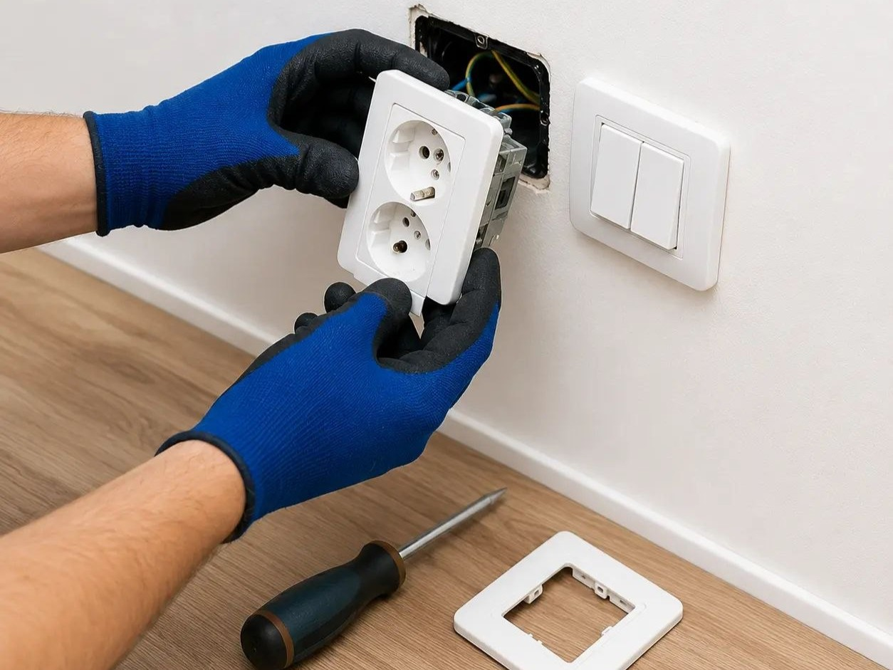
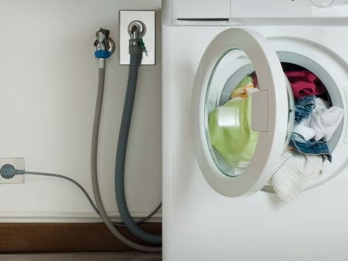
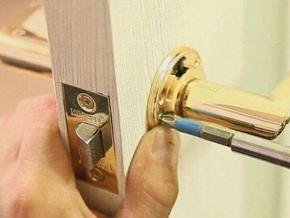
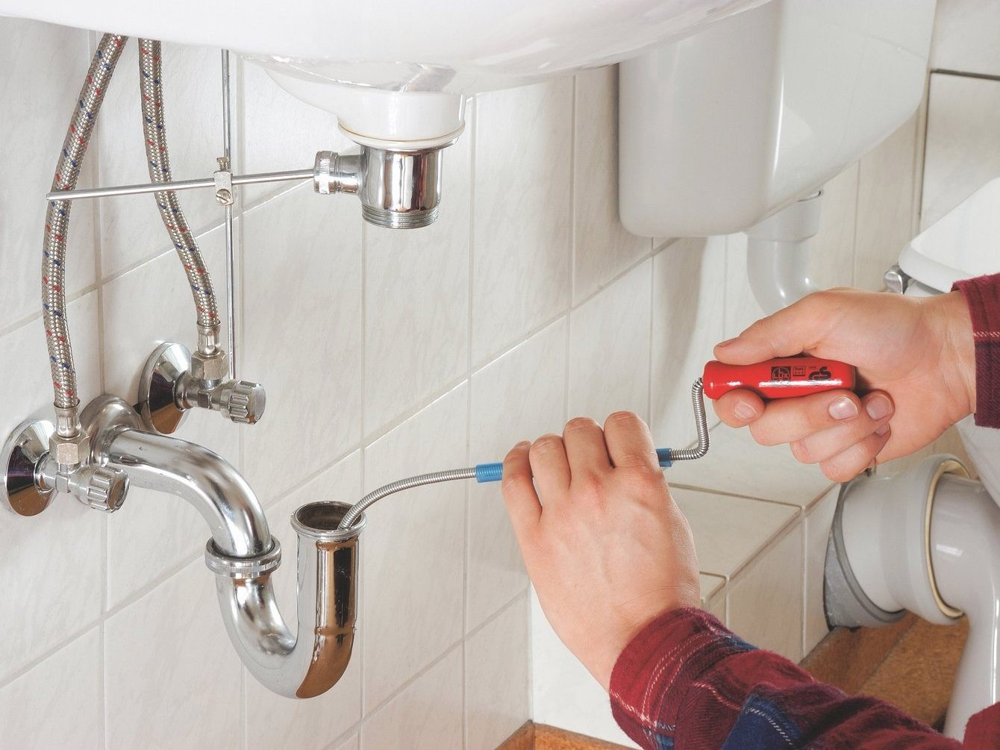
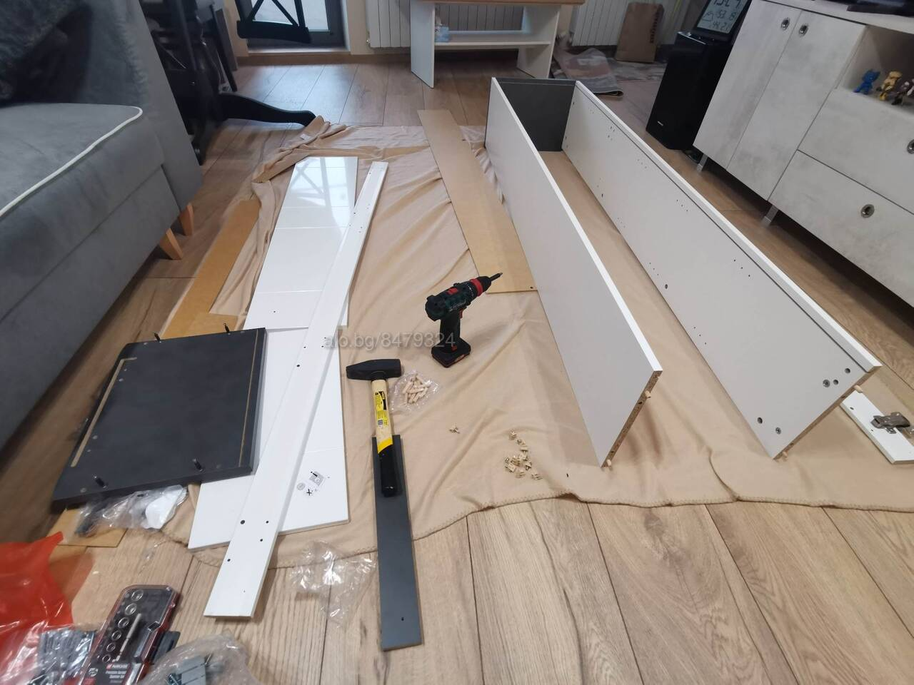

Hausmeister Service
Praktische Arbeiten, kleine Reparaturen und Austauscharbeiten rund um Haus und Wohnung.


Waschmaschinen und Geschirrspüler anschließen

Wasserhähne und Mischbatterien austauschen

Türschlösser austauschen

Kleine Verstopfungen beseitigen
